Highly responsive to both command operation and disturbance.
Reducing a response lag contributes to suppress the risk of destabilization.
Our motivation is to provide versatility and dexterity to a robot. Robots show accurate and efficient operation and establish a leading position in some areas, but many tasks are still performed by human operators. For handling such works and pioneering new applications, we think robots should have more intelligence and dexterity.
How can we make robots dexterous? Why a human can acquire both versatility and dexterity? We started by mimicking a human motor control system, including a receptor, central nervous system, and effector. Human actions are roughly classified into 3 patterns: ➀ deliberative motion via a cerebrum, ➁ coordinating motion via a cerebellum, and ➂ reflex motion through a spinal cord. Those complementary motions have unique functionality and dexterity, and each system also has a task-specific architecture, respectively.

Imitating a human motor control system, hierarchical control systems have been developed so far. Most systems focused on achieving intelligence, and those systems make robots versatile. However, few systems include a reflex center, which enables fine control and disturbance suppression. Making this system is difficult because it requires an interdisciplinary system design integrating a fast reception system, computing system, and drive system. Against such a background, we are working to construct a responsive system with collaborating experts in each field, toward providing agility to robots. We believe improving dexterity expands the availability of robots.

 
